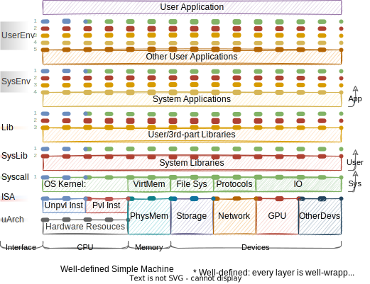
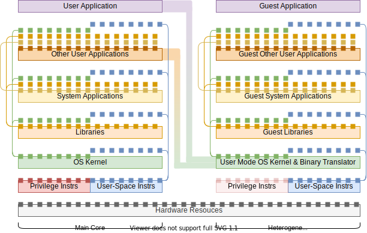
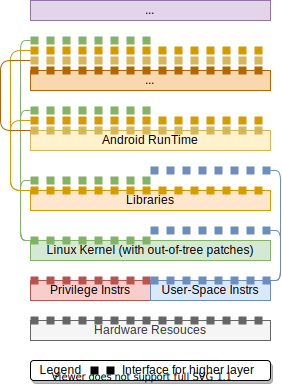

前言：一些用语可参考Wikipedia: Template:Linux kernel
2021.07.09
Guest Interface Upper/Lower
存在guest可使用转换器提供的最高的层次和最低层次的区别，比如Pin最低可以到ABI层次，最高可以到API层次（Pin提供了自己的libc，即PinCRT）。
接口图和宝塔图表达能力
宝塔图：如此可以用层次的宽度和位置，来表示上下层提供的接口关系。比如一个正常的硬件+操作系统+软件层次是一个宝塔形状。下面的这种图（接口图）相比之下太复杂。
还是有问题，某一层次完全遮蔽下层，上层就无法表示出“越级”使用下层。（User Application和Other User Application对下层的以来关系，宝塔图无法表达）
所以这个图（接口图）还是比宝塔图表达能力强。
2021.07.09前
General Application


Linux Application
QEMU

WINE


Android

| With Native Code | Universal |
|---|---|
 |  |
Win Application